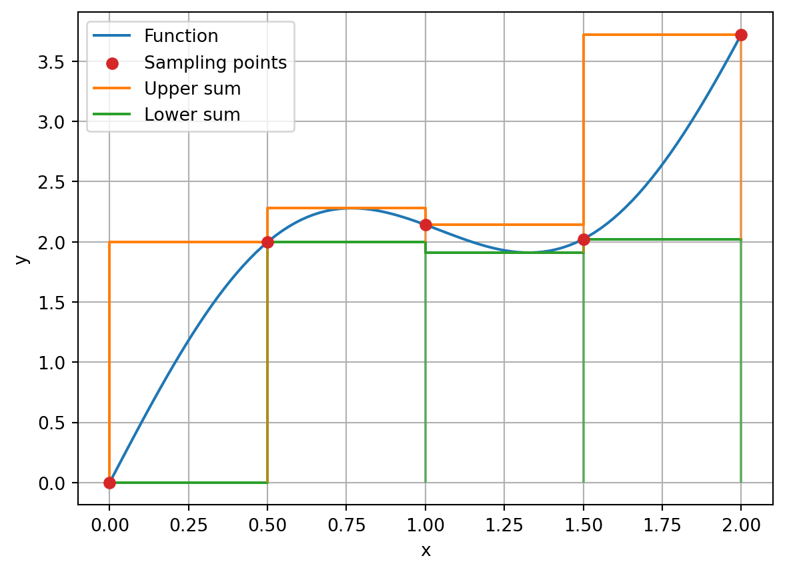
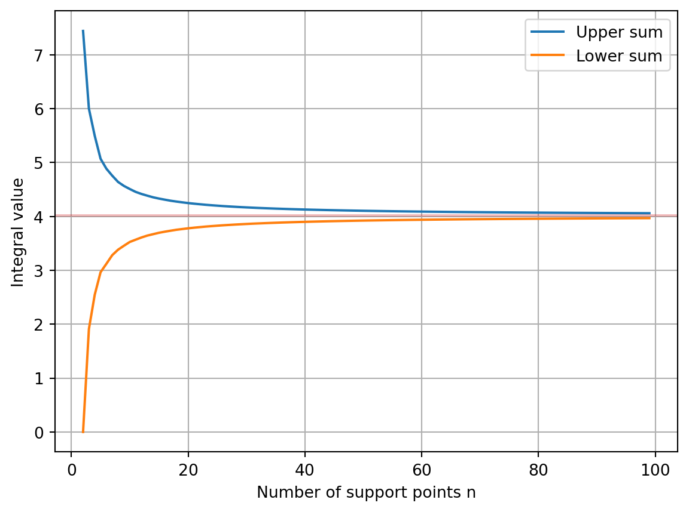
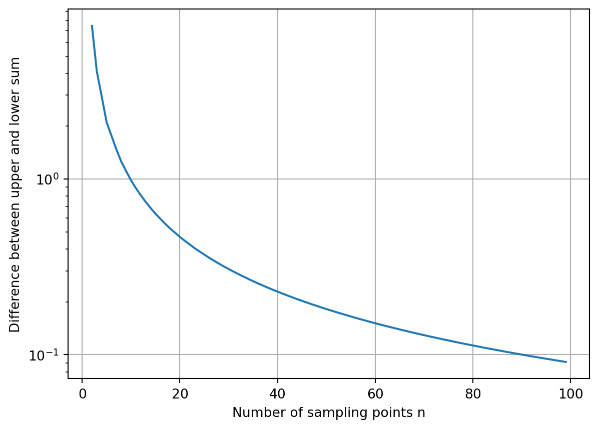
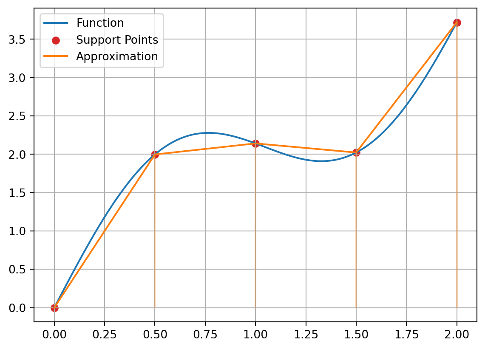
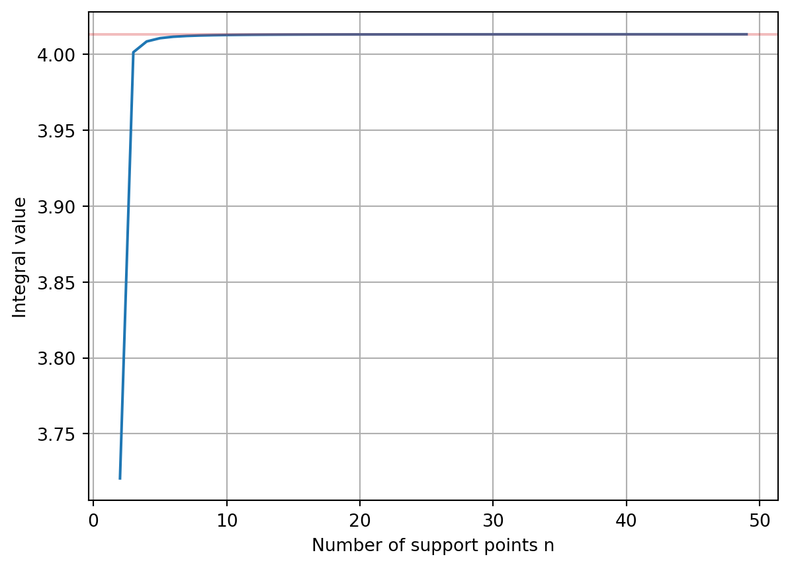
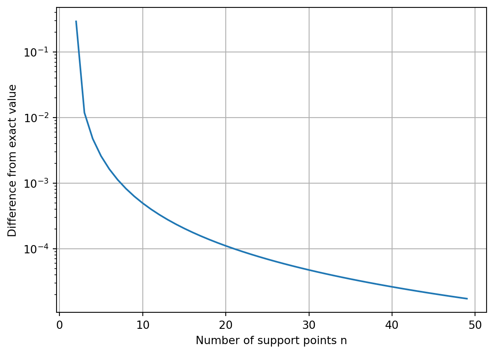
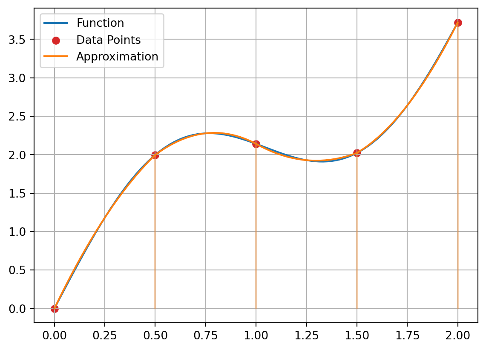
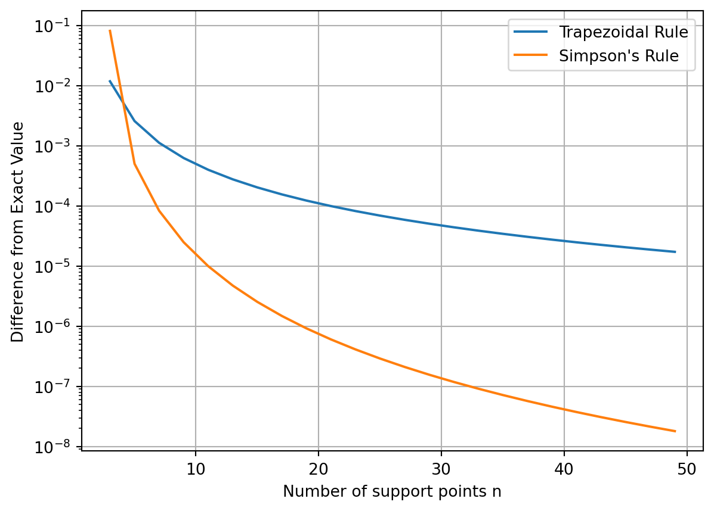
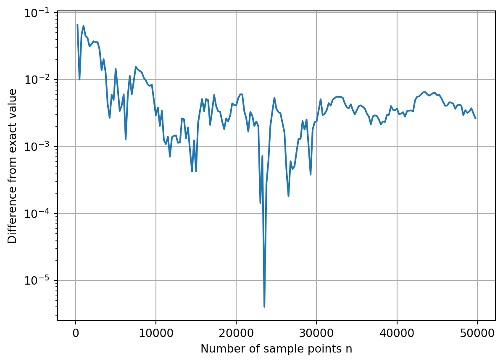
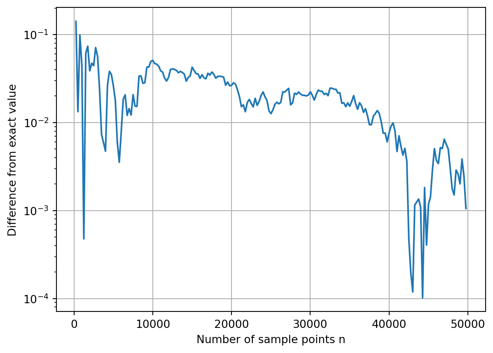

import numpy as np
import matplotlib.pyplot as plt
import seaborn as sns40 Integration
The computation of integrals is used, for example, in determining areas or total forces. Formally, the definite integral \(\mathsf{I}\) of the function \(\mathsf{f(x)}\) over the interval \(\mathsf{x \in [a,b]}\) is represented as follows:
\[ \mathsf{I = \int_a^b f(x)\ dx} \]
In general, the integral cannot be solved analytically, as the antiderivative \(\mathsf{F(x)}\) is not easy to determine. In such cases, numerical methods can be used to approximate the integral value. Numerical integration is often also referred to as numerical quadrature.
This chapter provides a brief overview of numerical integration methods:
- Upper and lower sums
- Quadrature
- Monte Carlo
40.0.1 Upper and Lower Sum
One of the most fundamental ways to compute integrals of functions is through the upper and lower sums. They approximate the integral by bounding it from above and below. As the number of sample points, i.e., positions where the function is evaluated, increases, both bounds converge to the true integral value.
40.1 Definition
To construct the upper and lower sums, evenly spaced sample points on the interval \(\mathsf{[a,b]}\) are required. If \(\mathsf{n+1}\) sample points are chosen, we have:
\[ a = x_0 < x_1 < \cdots < x_n = b \]
The spacing between the points is \(\mathsf{\Delta x = (b-a)/(n-1)}\). On each of the \(\mathsf{n}\) subintervals \(\mathsf{[x_{i-1}, x_{i}]}\), the maximum and minimum values of the function \(\mathsf{f(x)}\) are determined and defined as \(\mathsf{O_i}\) and \(\mathsf{U_i}\), respectively.
\[ \mathsf{O_i = \max\left( f(x) | x \in [x_{i-1}, x_{i}] \right)} \] \[ \mathsf{U_i = \min\left( f(x) | x \in [x_{i-1}, x_{i}] \right)} \]
The desired approximation of the integral is the sum of \(\mathsf{O_i}\) and \(\mathsf{U_i}\) multiplied by the width of the subinterval, \(\mathsf{\Delta x}\):
\[ \sum_{i=1}^n \Delta x U_i \lesssim I \lesssim \sum_{i=1}^n \Delta x O_i \]
40.2 Example
As an example, consider the following integral:
\[ \mathsf{I = \int_0^2\sin(3x) + 2x \ dx} \]
def func(x):
return np.sin(3*x) + 2*x
# Data for visualization
x = np.linspace(0, 2, 100)
y = func(x)
# Exact solution
I_exact = (-1/3*np.cos(3*2) + 2**2) - (-1/3)First, the support points are evenly distributed in the interval \(\mathsf{[0,2]}\).
n = 5
xi = np.linspace(0, 2, n)
yi = func(xi)Both sums require the extreme values of the function to be integrated within the subintervals. These are determined by evaluating the function on the subinterval. For the following visualization, the set of sums also has n elements.
upper = np.zeros(n)
lower = np.zeros(n)
for i in range(len(upper)-1):
cx = np.linspace(xi[i], xi[i+1], 50)
cy = func(cx)
upper[i+1] = np.max(cy)
lower[i+1] = np.min(cy)The first elements of the two cumulative lists are set to the first function values, this is only for the subsequent display.
upper[0] = yi[0]
lower[0] = yi[0]Visualization of individual functions
plt.plot(x, y, label='Function')
plt.scatter(xi, yi, label='Sampling points', c='C3', zorder=3)
plt.plot(xi, upper, drawstyle='steps-pre', label='Upper sum')
plt.plot(xi, lower, drawstyle='steps-pre', label='Lower sum')
plt.vlines(xi, ymin=lower, ymax=upper, color='C1', alpha=0.6)
plt.vlines(xi, ymin=0, ymax=lower, color='C2', alpha=0.6)
plt.xlabel('x')
plt.ylabel('y')
plt.grid()
plt.legend();
The above procedure can now be summarized in a function that returns the sums of the two sequences.
def up_down_sum(n, start=0, end=2):
x_vals = np.linspace(start, end, n)
y_vals = func(x_vals)
dx = x_vals[1] - x_vals[0]
sum_upper = 0
sum_lower = 0
for i in range(n-1):
sub_x = np.linspace(x_vals[i], x_vals[i+1], 50)
sub_y = func(sub_x)
upper = np.max(sub_y)
lower = np.min(sub_y)
sum_upper += dx * upper
sum_lower += dx * lower
return sum_upper, sum_lowerFor a systematic study of convergence behavior, the integration function is called for different numbers of nodes.
n_max = 100
ns = np.arange(2, n_max, 1, dtype=int)
os = np.zeros(len(ns))
us = np.zeros(len(ns))
for i, n in enumerate(ns):
o, u = up_down_sum(n)
os[i] = o
us[i] = uThe graphical representation of the two sums shows a continuous convergence of these.
plt.plot(ns, os, label='Upper sum')
plt.plot(ns, us, label='Lower sum')
plt.axhline(y=I_exact, color='C3', alpha=0.3)
plt.xlabel('Number of support points n')
plt.ylabel('Integral value')
plt.grid()
plt.legend();
This becomes particularly evident when the difference between the two sums is plotted. With a logarithmic representation, the continuous convergence can also be read quantitatively.
plt.plot(ns, os-us)
plt.xlabel('Number of sampling points n')
plt.ylabel('Difference between upper and lower sum')
# plt.xscale('log')
plt.yscale('log')
plt.grid();
40.3 Interpolation
In the formation of the upper and lower sums, the function to be integrated was approximated by a constant value in the subintervals between the support points. A more accurate calculation of the integral can be achieved through better interpolation. Polynomials are suitable for this because they are easy to integrate.
40.3.1 Trapezoidal Rule
The trapezoidal rule is based on approximating the function to be integrated by straight lines, i.e., polynomials of degree 1, over the subintervals. The approximation of the integral value results accordingly from the areas of the resulting trapezoids.
As in the previous chapter, the method is demonstrated using the following function:
\[ \mathsf{I = \int_0^2\sin(3x) + 2x \ dx} \]
def func(x):
return np.sin(3*x) + 2*x
# Data for visualization
x = np.linspace(0, 2, 100)
y = func(x)
# Exact solution
I_exact = (-1/3*np.cos(3*2) + 2**2) - (-1/3)Generation of support points
n = 5
xi = np.linspace(0, 2, n)
yi = func(xi)First, we visualize the method.
plt.plot(x, y, label='Function')
plt.scatter(xi, yi, label='Support Points', c='C3')
plt.plot(xi, yi, label='Approximation', c='C1')
plt.vlines(xi, ymin=0, ymax=yi, color='C1', alpha=0.3)
plt.grid()
plt.legend();
The integration itself can be performed using the function scipy.integrate.trapezoid.
res = scipy.integrate.trapezoid(yi, xi)
print(f"Integral value with {n} sample points: {res:.4f}")Integral value with 5 sample points: 4.0107The computed value approaches the exact value as the number of support points increases.
n_max = 50
ns = np.arange(2, n_max, 1, dtype=int)
tr = np.zeros(len(ns))
for i, n in enumerate(ns):
xi = np.linspace(0, 2, n)
yi = func(xi)
tr[i] = scipy.integrate.trapezoid(yi, xi)plt.plot(ns, tr)
plt.axhline(y=I_exact, color='C3', alpha=0.3)
plt.xlabel('Number of support points n')
plt.ylabel('Integral value')
plt.grid();
plt.plot(ns, np.abs(tr-I_exact))
plt.xlabel('Number of support points n')
plt.ylabel('Difference from exact value')
# plt.xscale('log')
plt.yscale('log')
plt.grid();
40.3.2 Simpson’s Rule
Using a second-degree polynomial leads to Simpson’s rule.
Here, the function is evaluated at a midpoint within each subinterval,
and this value, together with the values at the endpoints, is used to determine
the polynomial coefficients.
The example above visually demonstrates Simpson’s rule.
n = 5
xi = np.linspace(0, 2, n)
yi = func(xi)plt.plot(x, y, label='Function')
plt.scatter(xi, yi, label='Data Points', c='C3')
# Compute and plot the polynomials
for i in range(n-1):
dx = xi[i+1] - xi[i]
cx = (xi[i] + xi[i+1]) / 2
cy = func(cx)
P = np.polyfit([xi[i], cx, xi[i+1]], [yi[i], cy, yi[i+1]], 2)
Px = np.linspace(xi[i], xi[i+1], 20)
Py = np.polyval(P, Px)
label=None
if i==0:
label='Approximation'
plt.plot(Px, Py, color='C1', label=label)
plt.vlines(xi, ymin=0, ymax=yi, color='C1', alpha=0.3)
plt.grid()
plt.legend();
The Simpson’s rule is already implemented in function scipy.integrate.simpson. Below, only the difference to the trapezoidal rule is demonstrated.
n_max = 50
ns = np.arange(3, n_max, 2, dtype=int)
si = np.zeros(len(ns))
tr = np.zeros(len(ns))
for i, n in enumerate(ns):
xi = np.linspace(0, 2, n)
yi = func(xi)
si[i] = scipy.integrate.simpson(yi, xi)
tr[i] = scipy.integrate.trapezoid(yi, xi)plt.plot(ns, np.abs(tr-I_exact), label='Trapezoidal Rule')
plt.plot(ns, np.abs(si-I_exact), label='Simpson\'s Rule')
plt.xlabel('Number of support points n')
plt.ylabel('Difference from Exact Value')
# plt.xscale('log')
plt.yscale('log')
plt.legend()
plt.grid();
40.4 Monte Carlo
A completely different approach to integration is followed with the Monte Carlo method. Here, random points \(\mathsf{x_i}\) are generated within the desired integration range. The mean of the corresponding sum of function values \(\mathsf{f(x_i)}\) approximates the integral. Especially for a small number of random values, the result can deviate significantly from the exact value. The advantage of the method becomes apparent for high-dimensional integrals.
For \(\mathsf{n \gg 1}\) random sample points \(\mathsf{x_i \in [a, b]}\), the following approximation holds:
\[\mathsf{I = \int_a^b f(x)\ dx \approx \frac{b-a}{n}\sum_{i=1}^n f(x_i)} \]
For the example from the previous chapters, we have
def func(x):
return np.sin(3*x) + 2*x
# Data for visualization
x = np.linspace(0, 2, 100)
y = func(x)
# Exact solution
I_exact = (-1/3*np.cos(3*2) + 2**2) - (-1/3)n = 2000
xi = np.random.random(n) * 2
yi = func(xi)
I = 2 * 1/n * np.sum(yi)
print(f"Integral value for {n} sample points: {I:.4f}")Integral value for 2000 sample points: 3.9947n_max = 50000
dn = 250
ns = np.arange(dn, n_max, dn, dtype=int)
mc = np.zeros(len(ns))
xi = np.zeros(n_max)
for i, n in enumerate(ns):
xi[n-dn:n] = np.random.random(dn) * 2
yi = func(xi[:n])
mc[i] = 2 * 1/n * np.sum(yi)plt.plot(ns, np.abs(mc - I_exact))
plt.xlabel('Number of sample points n')
plt.ylabel('Difference from exact value')
# plt.xscale('log')
plt.yscale('log')
plt.grid();
Alternatively, the area ratio between the function to be integrated and a reference area \(\mathsf{A_r}\) can be used. For this purpose, \(\mathsf{n}\) pairs of random numbers \(\mathsf{(x_i, y_i)}\) are generated and counted to see how many of them lie within the target area. The assumption is that both ratios converge for large \(\mathsf{n}\). In the simplest case, when \(\mathsf{f(x) \ge 0}\), the following estimate applies:
\[\mathsf {I \approx \frac{A_r \cdot \left|\left\{y_i \ |\ y_i < f(x_i)\right\}\right|}{n}} \]
In the example above, the area \(\mathsf{[0, 2] \times [0, 4] = 8}\) can be used as the reference area.
n = 2000
xi = np.random.random(n) * 2 # x-coordinates of random points
yi = np.random.random(n) * 4 # y-coordinates of random points
z = np.sum(yi < func(xi)) # count points under the function
I = z / n * 8 # approximate integral
print(f"Integral value with {n} sample points: {I}")Integral value with 2000 sample points: 3.86max_n = 50000
step_n = 250
n_values = np.arange(step_n, max_n, step_n, dtype=int)
mc_estimates = np.zeros(len(n_values))
x_vals = np.zeros(max_n)
y_vals = np.zeros(max_n)
for i, n in enumerate(n_values):
x_vals[n-step_n:n] = np.random.random(step_n) * 2
y_vals[n-step_n:n] = np.random.random(step_n) * 4
count = np.sum(y_vals[:n] < func(x_vals[:n]))
mc_estimates[i] = count / n * 8plt.plot(n_values, np.abs(mc_estimates-I_exact))
plt.xlabel('Number of sample points n')
plt.ylabel('Difference from exact value')
# plt.xscale('log')
plt.yscale('log')
plt.grid();